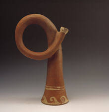

The earliest metal trumpets are thought to have been made around 1500 BC. Trumpets made of bronze and silver were found in King Tut's grave. This, however, is not necessarily the origin of people creating sound by blowing through something. There are records of people in early civilizations blowing through conch shells or other shells to create sound. This picture below demonstrates some of the earliset types of trumpet-like instruments.
